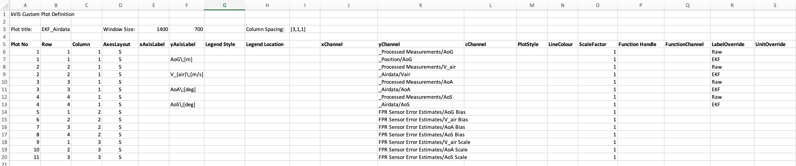

- save as .xlsx into CustomPlots folder of BSPfile
- header format, including column labels (Rows 1-5), must not be changed
- the group/channel identifier(s) can be generated from the context menu
-> copy to clipboard in the kVIS3 channel list.
- Plot title: Name of plot to be listed in kVIS3
- Window Size: Plot window size in pixels
- Row: Plot stack row to place plot into
- Column: Plot stack column to place plot into- AxesLayout: S for single y axis, L and R
for double y axis. Plot definition must have a left y axis.
x label. Provide a valid LaTeX
string. Leave empty for defaults. - yAxisLabel: Override plot y label. Provide a valid LaTeX
string. Leave empty for defaults.
horizontal or vertical. Default:
Matlab default - LegendLocation: valid Matlab legend location string
- xChannel: data to use for plot x axis (default: time). Must have the same sample rate (number of points) as yChannel. Format: group Name / channel Name- yChannel: data to use for plot y axis. Format: group Name / channel Name
- cChannel: if specified, xy plot becomes a scatter plot with cChannel used as colour for the data points. Must have the same sample rate (number of points) as yChannel. Format: group Name / channel Name- LineStyle: valid Matlab line style specifier (-, .-, .. and so on)
- LineColour: valid line colour spec character (‘k’)- ScaleFactor: Scale yChannel by this value
- FunctionHandle: function handle to process yChannel data. Must be on
path, typically provided by BSP in CustomPlotFcn folder.
Function header: function [y,x] = demo_fcn(data, varargin)
y: new y data to be plottedx: new x vector to be used for plotting (useful for fft and other special plots)data: yChannel datavarargin: cell structure with content: {1}: fds structure {2}: selected data limits - must be applied to output to get consistent vector lengths {3}: string read from column FunctionChannel to be processed by the function.- FunctionChannel: Comma separated string of arbitrary arguments for above function, must be compatible with the function definition (see examples psd_fcn.m, filter_fcn.m).
m file formatKept for compatibility, use for new plots is discouraged.
The plot definition is structured as a cell array. The file content except the actual plot definition rows must equal to the structure shown in the example below.
All plots are generated against the time vector on the X-axis.
Plots are arranged using Matlab subplots().
- Row
- Col
- AxesLayout for Y axis
- PlotStyle: standard Matlab plot style shortcuts (solid, dashed,…)
- Color: standard Matlab line colour definition
- Group: tree group of data channel
- Channel: data channel name
- ScaleFactor: constant scale factor applied to the data during plot generation
- UnitOverride: new unit after scale factor applicationplot_definition = {
... Row, Col, AxesLayout, PlotStyle, Color, Group, Channel, ScaleFactor, UnitOverride;
1, 1, 'S', '', '', 'Base', 'Az', 1, '';
2, 1, 'S', '', '', 'Base', 'Gy', 180/pi, 'deg/s';
3, 1, 'S', '', '', 'Base', 'AoA', 1, '';
4, 1, 'S', '', '', 'Base', 'Pitch', 1, '';
5, 1, 'L', '', '', 'Base', 'Elevator', 1, '';
5, 1, 'R', '', '', 'Control', 'Ch3 CMD (el)', 1, '';
};
CUSTOM_PLOTS.(BSP_NAME).Base = plot_definition;